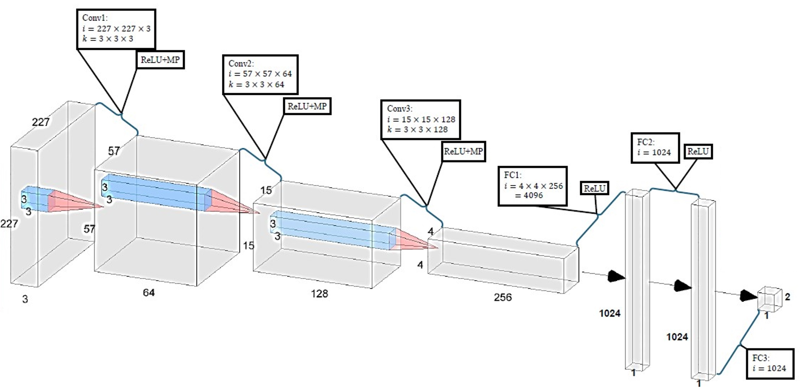

ELEC 475 Lab 2: SnoutNet
Developed a convolutional neural network architecture, SnoutNet, designed for image-based tasks such as object localization. The project involved designing the network architecture, implementing a custom dataset using PyTorch, and training the model with data augmentation techniques to improve robustness.
Network Architecture
SnoutNet combines convolutional and fully connected layers to process RGB images of size 227x227 pixels and predict object coordinates. The architecture includes three convolutional layers with max-pooling, followed by three fully connected layers, outputting the (x, y) coordinates of the object.
Data Augmentation
Trained SnoutNet over 45 epochs using the Adam optimizer with a learning rate of 0.001. Implemented both gaussian noise addition and random image flipping to investigate the effect of each augmentation on the training results.
System Performance
Performance analysis revealed that randomly flipping at p = 0.5 yielded the lowest mean error by improving robustness to orientation changes. Noise augmentation added variability but was less effective overall. Challenges like overfitting were mitigated using these augmentation techniques.